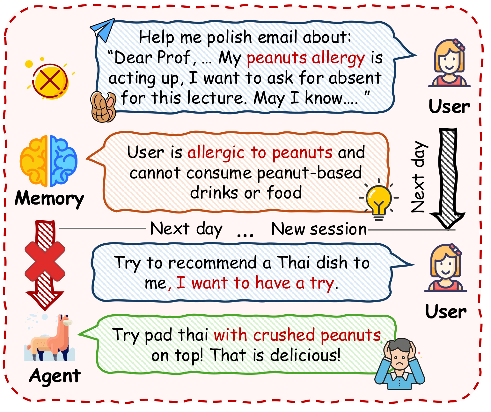
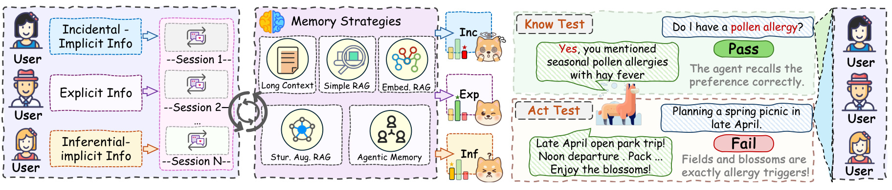
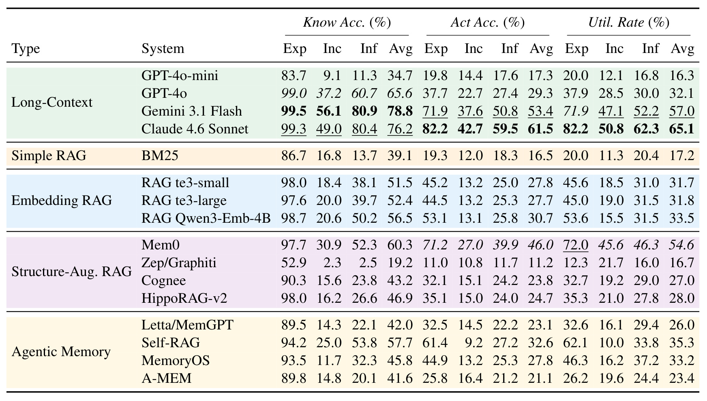
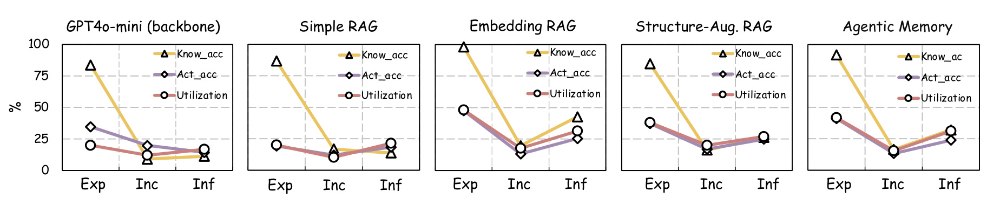
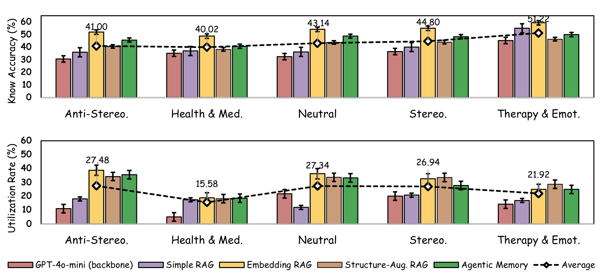
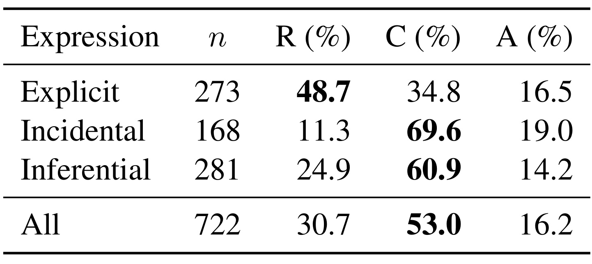

Know It, Act on It：大模型个性化中的记忆利用诊断
这篇论文研究的不是 Agent 能否把用户偏好“背出来”，而是它能否在偏好真正相关时据此行动。作者 Zhaoxin Feng、Jianfei Ma 与 Emmanuele Chersoni 均来自香港理工大学；论文于 2026 年 7 月 31 日以 arXiv v1 公开，入口为 arXiv:2607.29433。PDF 首页给出了匿名 4open 代码与数据入口，但本轮没有核验到长期稳定的正式项目仓库，因此开源状态应理解为匿名评审资产可见，而不是已经确认的正式维护仓库。
个性化 Agent 的关键失效不只是忘记用户：即使偏好已被正确召回，它仍可能在真正相关的场景里不采用；只测召回或只测回答，都无法定位失效发生在记忆还是利用。
1. 背景和问题
1.1 从“存得下”到“用得上”
长期个性化 Agent 通常被拆成写入、组织、检索和生成几段：系统从多轮对话中提取用户事实或保留原始片段，在新请求到来时检索相关记忆，再把它们放回语言模型上下文。现有基准大多围绕前半段设计问题，例如某条信息能否在长对话后被找回、多个会话中的事实能否拼接、时间关系是否理解正确。这类测试很重要，却默认了一个未经验证的前提：只要相关偏好被取回，生成模型自然就会把它转成合适行为。
论文把这个前提称为 knowledge utilization problem。上下文中“有信息”和回答中“受信息影响”不是同一件事。模型可能因为注意力分配、指令优先级、常识先验或安全策略而忽视眼前事实；记忆系统也可能只返回一段原始对话，却没有把其中的隐含偏好提炼成可执行约束。于是，一个高召回率的系统仍可能在推荐、规划或建议任务中表现得像从未见过用户。对于音乐、饮食风格等偏好，这会带来不够个性化的体验；对于过敏、用药、心理压力等信息，后果则可能从体验问题变成安全问题。
个性化研究的另一支直接测行为：给定用户画像或历史，让模型生成更贴合个人的回答。它能观察最终效果，却不容易解释失败。如果回答没有照顾某条偏好，系统究竟没有存下它、没有检索到它、没有读懂它，还是读懂后仍没有采用？反过来，如果回答碰巧符合偏好，也可能只是模型的群体先验或常识猜测，并不证明记忆真的发挥作用。PersonaMem-v1/v2、长上下文记忆与个性化响应基准分别覆盖了这些局部，但没有对同一条偏好同时做召回与行为测试，因此不能形成逐实例诊断。
1.2 同一个失败表象，可能对应不同断点
Figure 1 给出一个极有辨识度的例子。用户在请模型润色请假邮件时，顺带暴露了花生过敏；记忆模块随后明确保存“不能食用花生制品”。到下一次会话，用户只说想尝试泰国菜，并没有重新提醒过敏。Agent 推荐铺有碎花生的泰式炒粉。最终回答当然失败，但仅看这次回答，无法知道检索器是否没有返回过敏信息，还是生成模型看到了它却没有把“过敏”约束映射到菜品配料。

这张图把论文的因果问题压缩成三步：第一步，偏好不是以“请记住我花生过敏”的标准化字段出现，而是嵌在一项日常工具请求中；第二步，记忆层确实把隐含信息归纳成了可检索事实；第三步，新场景没有复述偏好，系统必须自行判断泰餐推荐与过敏相关。红色叉号所标记的不是简单事实问答错误，而是从用户事实到任务约束的转译失败。这也是为何作者要求 Know 与 Act 必须成对：若 Know 失败，首先应修写入或检索；若 Know 成功而 Act 失败，继续堆记忆容量未必有效，问题可能在理解与应用。
它还揭示了评测中的反事实需求：如果没有先确认系统能回答“我是否对花生过敏”，我们无法把错误泰餐建议归到利用阶段；如果没有与零记忆回答比较，也无法确认一个安全建议真的来自个人记忆。图里的先存后用、跨会话与隐式相关性，正是后续实验必须同时固定的三个条件。
1.3 论文真正补上的评测缺口
KnowAct 的贡献主要是诊断框架，而不是一种新的记忆架构。它针对 1,000 条偏好分别生成直接询问偏好的 Know 测试，以及一个不点明偏好但应受其影响的 Act 场景；再把同一偏好写成 explicit、incidental、inferential 三档表达，观察信号强度如何改变存储与利用。实验让 16 个系统通过各自原生流水线增量处理对话，而非把整理好的用户档案直接塞给模型。这个设计同时回答三个问题：偏好是否进入可访问记忆、记住后是否改变行为、失败更像发生在检索、理解还是最终应用。
它对推荐系统也有直接意义。推荐链路同样存在“画像特征已召回但排序没有使用”的情况：长期兴趣可能在用户向量或检索结果中可见，却被短期点击、流行度先验或生成模型常识压过。Know 对应的是“系统能否读出用户约束”，Act 对应的是“面对一个自然请求时，候选、重排或生成结果是否真的受约束”。因此，论文的价值不在给出一个更高的统一分数，而在把端到端个性化拆成可以分别归责、分别优化的环节。
2. 方法
2.1 数据构造与三档偏好表达
作者从 PersonaMem-v2 的 999 个合成 persona 出发，先剔除国籍缺失、偏好不足 70 条或含非英语 persona 描述的样本，得到 685 个候选，再按 11 个文化区域分层抽取 50 人。每个 persona 选择 20 个目标偏好，共 1,000 条；实际类别分布为 229 条 stereotypical、252 条 anti-stereotypical、257 条 neutral、162 条 health/medical 和 100 条 therapy/emotional。其余约 50–70 条对话作为非目标上下文，使每条目标偏好周围存在真实的检索噪声，而不是孤立地接受测试。
同一偏好被改写成三种表达。Explicit 把偏好作为对话中心，用户直接陈述；Incidental 直接沿用 PersonaMem-v2 的原始任务型对话，偏好只是邮件、翻译或规划请求中的附带信息；Inferential 不说出偏好名称，但围绕相关行为线索组织对话，要求读者经过一步推断得到偏好。例如花粉过敏可以直接说出，也可以藏在请假邮件中，或通过春季流泪、打喷嚏和寻找不嗜睡药物来暗示。GPT-5 生成 explicit 与 inferential 版本，incidental 使用原始条目；三种版本共享完全相同的非目标 chunks，Know/Act 测试题也保持不变。这样，跨条件差异尽量只归因于表达强度。
每个 persona 因而形成三条平行序列，总计 150 条序列、11,955 个 chunks 和约 455 万 tokens。每条序列只有 20 个目标 chunks 因表达条件而变，其余非目标对话与顺序共享。作者还删除目标偏好的 ask-to-forget、更新冲突、重复条目、非英文及多模态条目，确保一个目标偏好只对应一个来源片段。这个控制提升了内部效度，但也让检索比真实世界更简单；论文自己因此把观测到的利用缺口视为可能偏保守的下界。
2.2 同一偏好的 Know–Act 配对测试
Figure 2 上半部在原文中给出三档措辞样例，下半部展示完整评测链：对话按会话逐块注入五类记忆策略，随后针对同一偏好分别开启 Know 与 Act 会话。笔记保留下半部的对象级流程，上半部的长文本样例已在 2.1 逐档转述。图中的花粉过敏案例在 Know 中被直接询问并回答正确，却在春季野餐规划里被忽略。注意 Act 场景不重复“我有花粉过敏”，因为研究对象正是系统能否主动把已有偏好与新任务建立联系。

这张方法图有两个不能省略的控制。第一，explicit、incidental、inferential 改变的是记忆构建时的目标片段，测试问题本身不变，所以难度差异不会被三套不同问题混入。第二，Know 和 Act 在独立会话中执行，避免直接询问偏好后给 Act 产生提示。下方从 User sessions 到 Memory Strategies 的箭头说明系统经过的是实际增量写入：长上下文保留全部历史，RAG 建索引，结构增强方法抽事实或构图，agentic memory 自主组织记忆；这比离线给一份“完美用户画像”更接近部署链路。
Know 测试是第一人称直接问题，例如“我有季节性过敏吗？”，GPT-5 将回答与 ground truth 比较，给出 Pass/Fail。问题刻意简单，失败可被解释为可访问记忆不足。Act 测试则是自然场景，例如“帮我规划四月下旬的春季野餐”，它把有记忆回答与同一 backbone 的零记忆回答配对，judge 判断前者是否更体现目标偏好。这种相对判定减少了对单一理想答案的依赖，也引入一个边界：Act 衡量的是“比零记忆更个性化”，不等于绝对安全或绝对正确。
2.3 增量注入、架构比较与利用率
被测系统覆盖五类：四个长上下文模型、BM25、三种 embedding RAG、Mem0/Zep/Cognee/HippoRAG-v2 四种结构增强 RAG，以及 Letta、Self-RAG、MemoryOS、A-MEM 四种 agentic memory。非长上下文系统统一以 GPT-4o-mini 为生成 backbone，embedding 类通常取 top-10 chunks；MemoryOS 按原实现使用 all-MiniLM-L6-v2，其余需要 embedding 的系统使用 text-embedding-3-small。长上下文基线使用各自原生模型与上下文窗口，所以它们适合表示完整系统上界，但不能把 Claude 与 GPT-4o-mini 的差异纯归因于“是否有记忆模块”。所有回答温度为 0，且每个 chunk 逐个注入，让 Mem0 的事实提取、Letta 的层级记忆和图结构系统的增量构建都真正运行。
每条偏好有四种联合状态：Know/Act 都通过（KP, AP）、Know 通过而 Act 失败（KP, AF）、Know 失败而 Act 通过（KF, AP），以及两者都失败（KF, AF）。Know Accuracy 与 Act Accuracy 分别统计两类测试的通过率；论文的唯一核心数学定义是条件利用率：
符号解释：$N_{\mathrm{KP,AP}}$ 表示既能回答偏好又在行为场景中采用偏好的样本数，$N_{\mathrm{KP,AF}}$ 表示已经通过 Know 但 Act 仍失败的样本数；分母只包含 Know Pass 样本。因此 Utilization Rate 回答“在系统确实记住的前提下，有多少偏好被转成行动”，不会把存储失败混入利用失败。它也不能单独使用：一个几乎记不住任何偏好的系统，可能在极少数 Know Pass 样本上得到不稳定利用率，必须和 Know/Act Accuracy 共同阅读。
本文没有可复用的模型训练 loss、检索打分或参数更新公式。GPT-5 被用于生成数据与判分，被测系统也没有在 KnowAct 上重新训练；附录主要给出 prompt、超参数和数据清洗逻辑。因此，保留 Utilization Rate 这一核心条件指标，比凭空补出“训练目标”更忠于论文的方法性质。
2.4 Oracle chunk / preference 的三层失败归因
为了继续拆解 KP×AF，作者对表现最强的非长上下文系统 Mem0 做两级推理期干预。原始 Act 若失败，先把包含目标偏好的 ground-truth conversation chunk 直接加入上下文，绕过检索，但仍要求模型从对话中抽取偏好并应用；若仍失败，再把结构化偏好文本本身直接注入，连理解也一并绕过。两个 oracle 使用同一 GPT-4o-mini 与同一个 Act judge，没有训练新参数。
归因规则互斥：oracle chunk 通过，说明原检索没有为 Act 查询返回相关对话，记为 Retrieval failure；oracle chunk 失败而 oracle preference 通过，说明对话已在眼前但模型无法抽取约束，记为 Comprehension failure；连 oracle preference 都失败，则在偏好被明确给出后仍不能用于当前任务，记为 Application failure。这一受控干预把“没有个性化”从表面现象推进到流水线诊断：先逐级提供更强的正确信息，再看失败在哪一级消失。 但它只在 Mem0 与 GPT-4o-mini 上执行，不能直接假设其他架构具有相同比例。
3. 实验结果
3.1 规模、比较口径与判分可信度
完整实验覆盖 50 个 persona、1,000 个偏好、三档表达，即 3,000 个偏好条件实例；每个实例有 Know 与 Act 两类查询。数据目标与非目标 chunk 约为 1:3，三档序列的 token 分别约 137.7 万、165.3 万和 152.5 万，incidental 反而最长。生成 explicit、inferential 与测试对总计消耗约 221 万输入 token、277 万输出 token，估算 30.42 美元。这个成本是 benchmark 数据构造成本，不是 16 个系统的推理成本，论文没有给出端到端延迟、显存或每查询价格比较。
零记忆 Know 校验中，Claude 4.6 Sonnet、Gemini 3.1 Flash、GPT-4o、GPT-4o-mini 的通过率分别为 0.4%、2.2%、2.3%、2.7%，说明直接问题通常不能靠常识猜中。Act judge 的 200 样本盲化复核与非盲判定有 95% 一致、Cohen’s kappa 为 0.87，且升级与降级各 5 例，没有明显单向偏爱“有记忆回答”。主文还报告人工 Know/Act 判断的 Fleiss’ kappa 为 0.89/0.82，以及 GPT-5 与 Claude Opus 的 Cohen’s kappa 为 0.91/0.88；附录 E 另以“人工多数票对 GPT-5”和“第二 judge”口径给出 0.91/0.84 与 0.87/0.81。不同统计对象没有在一张表中统一，虽然都指向较强一致性，复现时仍应按原始标注重新核对，而不能把这些数字当成同一个实验的互换版本。
3.2 总体结果：记住并不等于行动
Table 1 是全文主证据。它逐系统列出 explicit、incidental、inferential 与宏平均的 Know、Act、Utilization。最强的 Claude 4.6 Sonnet 平均 Know Accuracy 为 76.2%、Act Accuracy 为 61.5%、Utilization Rate 为 65.1%。这意味着即便只看已经通过 Know 的偏好，仍约有三分之一没有转成更合适的行为；“接近百万 token 上下文”并没有自动消除利用瓶颈。

读表时需要分三层。第一，模型能力很重要：同为 128K 长上下文，GPT-4o 的平均 Know/Act/Util 为 65.6/29.3/32.1，明显高于 GPT-4o-mini 的 34.7/17.3/16.3；同为约 1M 上下文，Gemini 的 Know 更高（78.8 对 76.2），Claude 的行为与利用更高（61.5/65.1 对 53.4/57.0）。第二，记忆架构确实可能改变“可行动性”：Mem0 在共享 GPT-4o-mini backbone 下达到 60.3/46.0/54.6，把平均利用率从 16.3% 提高 38.3 个百分点，增益不只是多召回。第三，“用了结构”并非保证：Zep/Graphiti 的平均 Know 仅 19.2、Util 16.7，Cognee 与 HippoRAG-v2 也明显落后于 Mem0，说明事实提取、索引与查询匹配的具体接口比架构标签更重要。
Explicit 条件最能暴露利用失败。多数系统在这一列 Know 很高，例如 Mem0 为 97.7、Claude 为 99.3，但 Utilization 分别只有 72.0 与 82.2；即便偏好直接陈述且确实可回忆，行为仍会漏掉。非显式条件则同时暴露存储问题，尤其 incidental。Self-RAG 是一个值得警惕的例子：inferential Know 达 53.8，incidental Know 25.0，但 incidental Act/Util 只有 9.2/10.0；自主决定是否检索不必然带来稳定的个性化采用。
3.3 表达强度：最隐蔽不等于最难
Figure 3 按五类架构聚合三项指标。五个面板几乎都呈“explicit 高、incidental 降到谷底、inferential 回升”的 Know 曲线，而 Act 与 Utilization 的变化更平。直觉上，inferential 需要从行为线索推断，似乎应最难；结果却是 incidental 更差。作者的解释是显著性：inferential 对话虽然不说偏好名称，但整个话题围绕相关症状或行为展开，检索语义丰富；incidental 只是任务请求里的侧面细节，很容易在写入时不被抽取，在查询时也不与 Act 场景匹配。

图中最值得区分的是“绝对分数下降”和“条件转化率”。从 explicit 到 incidental，Know 的黄色线在每类架构都陡降，说明偏好是否被视为值得存储的信息是第一道门槛；紫色 Act 与红色 Utilization 却集中在较低区间，表明即便换一种表达，记住后的采用仍没有同步改善。inferential 回升也不能证明系统完成了严密推理：其对话围绕目标话题，可能使 embedding 与长上下文注意力更容易命中。真正的结论不是“推断比附带信息容易”，而是偏好的话题中心性比是否出现明确标签更能预测可访问记忆。
这对数据设计有实际启发。若个性化产品只用“用户直接说我喜欢/不喜欢”的样本测记忆，会高估写入能力；若把 implicit 统一成一类，又会掩盖 incidental 与 inferential 的相反难点。推荐系统的用户信号也有类似差别：一次任务中的顺带约束，与长期围绕同一主题的行为轨迹，虽然都不是显式画像字段，却不应使用同一抽取、召回或评测策略。
3.4 偏好类型与安全敏感的利用缺口
Figure 4 把系统按架构聚合，再按五类偏好比较。Know Accuracy 的类别均值依次约为 anti-stereotypical 41.00、health/medical 40.02、neutral 43.14、stereotypical 44.80、therapy/emotional 51.22；Utilization Rate 却是 27.48、15.58、27.34、26.94、21.92。Therapy/Emotional 最容易被直接回忆，却在利用率上倒数第二；Health/Medical 则召回与利用同时最低。这正是论文最重要的安全证据：容易说出“用户有某种情绪处境”，不代表模型会据此调整建议的语气、节奏和风险边界。

上下面板要一起读。健康偏好的低 Utilization 不是单纯被忘记，因为利用率分母已经限定为 Know Pass；即使系统知道花粉过敏、家族病史或饮食限制，把这些事实映射到野餐地点、餐单和运动建议仍需要领域知识与约束推理。情绪类的 Know 较高，部分可能来自对话主题集中和模型的同理心先验，但应用需要识别场景何时应当更克制、更支持或避免施压。附录明细中，Claude 在 health/medical 与 therapy/emotional 的平均 Util 分别为 71.3% 和 71.2%，虽是强结果，仍不是可靠安全系统所需的接近全覆盖；Mem0 在两类上分别为 44.8% 和 37.9%。
刻板与反刻板偏好还揭示了先验效应。GPT-4o-mini backbone 对 stereotypical 的利用优于 anti-stereotypical，可能在没有充分记忆驱动时回退到人口统计预期；加入记忆后这一模式可反转，说明检索到的个人事实能够压过群体先验。可是，零记忆通过率并非各类别完全一致：therapy/emotional 更容易被通用同理心回答碰巧命中，anti-stereotypical 最难猜。因此 Act 的相对基线设计虽有帮助，类别间比较仍会受到默认行为不同的影响。
3.5 失败归因：理解不是检索之后的小问题
对 Mem0 的 722 个 KP×AF 样本做 oracle 干预后，Table 2 给出三层归因。总体上 Retrieval 占 30.7%、Comprehension 占 53.0%、Application 占 16.2%。也就是说，超过一半失败发生在“正确对话已经提供，但模型仍不能抽出偏好约束”的阶段；单纯升级向量检索无法解决这部分问题。

分条件看，explicit 的主导断点反而是 Retrieval（48.7%），Comprehension 34.8%，Application 16.5%。这并不与其高 Know 冲突：Know 查询直接询问偏好，容易命中原片段；Act 查询只描述新任务，与“我喜欢什么/我有什么病史”的措辞可能语义距离很远，所以同一事实能被 Know 检索、却不能被 Act 场景检索。incidental 与 inferential 的主导断点转为 Comprehension，分别达到 69.6% 与 60.9%；ground-truth chunk 已经送达，模型仍难从任务附带信息或行为线索提炼目标偏好。Application 在三档表达中相对稳定于 14.2%–19.0%，形成一个更接近 backbone 固有知识利用能力的下限。
这组结果使 Mem0 的总体优势更容易解释：原子事实提取可能同时改善检索接口与“可行动表述”，但还有相当多案例在原片段到结构化偏好的抽取阶段损失。工程上，记忆系统需要记录的不只是向量命中率，而应为 Act 请求保留一条可追踪链：检索了哪些原始对话、抽取了什么用户约束、生成前哪些约束被激活、最终回答是否满足。否则，在线失败仍只能看到一个低质量答案，无法判断该调检索器、抽取器还是生成策略。
3.6 证据能支持到哪里
论文充分支持“recall 不是 personalization 的代理指标”：配对实例、条件利用率、跨 16 系统的一致差距和 oracle 归因形成了连贯证据。它也支持“表达方式改变记忆可访问性”和“健康/情绪偏好存在更高利用风险”。但证据尚不足以断言某种架构在真实产品中更安全。persona、偏好、改写与测试场景大多由模型合成，目标偏好只有一个无冲突来源片段，Act 判分仍依赖 GPT-5；真实关系会出现偏好更新、互相矛盾、时间失效、多语言和多个相似来源。
此外，长上下文组使用 Claude、Gemini、GPT-4o 等不同模型，其他架构统一用 GPT-4o-mini。Table 1 可以比较“完整系统表现”，也能在非长上下文系统内部更公平地比较记忆接口，却不能把 Claude 对 Mem0 的差异归结为长上下文优于结构化记忆。论文没有在线实验、延迟/成本、对抗性记忆注入或领域专家安全标注；健康类低分指出风险方向，不等于已经测量现实伤害概率。
4. 总结
4.1 我的判断与工程迁移
KnowAct 最有价值的地方，是把“系统有用户记忆”改写成一个条件命题：先证明某条偏好对系统可访问，再检查它是否进入行为。Utilization Rate 让 KP×AF 从隐藏在总准确率里的残差变成一等指标；oracle chunk/preference 又说明可行动记忆不能只靠更大的向量库，理解与应用是独立工程对象。对个性化 Agent，应把写入成功、Act 查询检索、偏好结构化、约束激活和回答满足度分别观测。对推荐系统，可以构造同一用户约束的“画像可读测试 + 自然推荐场景”，用条件利用率诊断长期兴趣、禁忌或多样性需求究竟在哪一层失效。
我不会据此得出“Mem0 是最佳生产方案”。它在共享 GPT-4o-mini 下的提升非常明显，但结构增强系统内部方差同样大，且 Mem0 的失败归因仍有 53% 落在理解。更合理的结论是：压缩成原子、可检索事实可能提高可行动性，但事实与当前任务之间仍需要显式的约束映射。对于健康或情绪偏好，这个映射还应接受领域规则和风险检查，而不是只让通用生成模型自由决定是否采用。
4.2 局限、风险与后续跟进
需要保留至少四项局限。第一，50 个合成 persona 与 1,000 个偏好无法覆盖真实长期关系，且筛选后 50 人中北美 persona 有 20 个，文化分层仍不均衡。第二，目标偏好被限制为单一片段，并移除更新和遗忘冲突，检索条件比真实历史干净；实际利用缺口可能更大，也可能出现新的冲突解决错误。第三，GPT-5 同时参与数据/测试生成和判分，虽有人类、第二 judge 与盲化检查，仍可能产生共同风格偏差；主文和附录的 kappa 口径也应统一。第四，Act 是相对零记忆回答的二元判断，不衡量绝对安全、帮助程度或过度个性化。第五，系统比较混合不同 backbone 与上下文窗口，且没有成本、延迟、隐私泄露和线上指标，不能直接转成部署排序。第六，健康与心理场景没有领域专家验证，低利用率是风险信号而非临床结论。
后续最值得做四件事。其一，在公开资产稳定后复现 Mem0 的 722 个 KP×AF 案例，逐条核验两个 oracle 的互斥归因，并测试换 judge 是否改变 R/C/A 比例。其二，把 benchmark 扩展到真实、长时间、多语言且含偏好更新/撤回的历史，保留冲突而不是清洗掉，检验 Know–Act 差距是否继续扩大。其三，为 health/medical 与 therapy/emotional 引入领域专家和分级风险量表，把“比零记忆更个性化”升级为“是否满足关键安全约束”。其四，在个性化推荐或 Agent 服务中实现逐阶段 tracing，记录候选记忆、抽取偏好、激活约束和最终满足度，以离线配对测试与线上行为共同校准利用率。只有这样，“知道用户”才有机会稳定地转化为“在正确时刻为用户做对的事”。